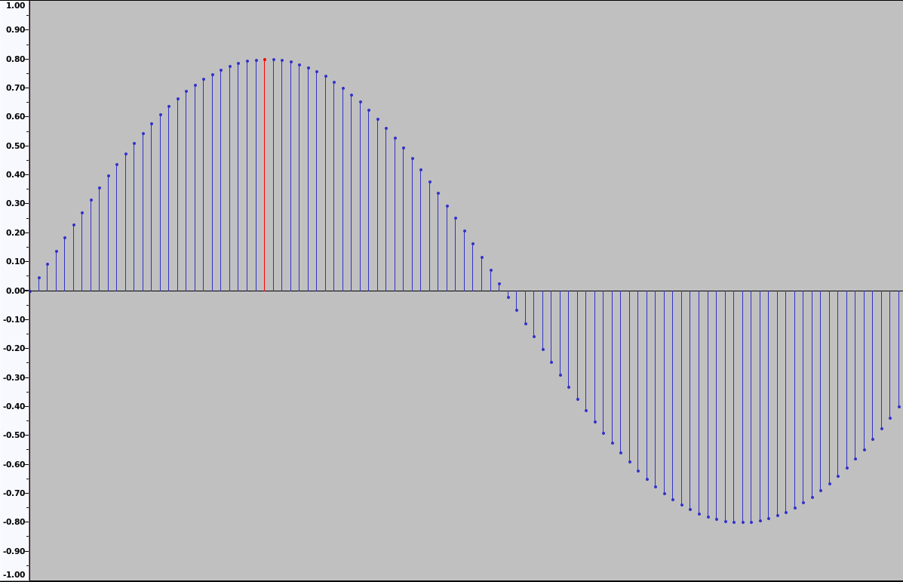

The Advanced Linux Sound Architecture (ALSA) project is used to implement sound card drivers in Linux. Apart from the Kernel API, ALSA also provides a library API exposing the same functionality as the Kernel API but with a simpler and more usable interface. In this post, we will explore how the PCM Interface can be used for sound playback.
There are quite a few options for dealing with audio on Linux. On one hand, we have high level libraries such as SDL or OpenAL that allow us to play a sound with a few lines of code. Then we also have entire frameworks devoted to multimedia such as GStreamer. And we also have sound servers like PulseAudio or JACK that manage the use and access to audio devices, and allow us to deal with complex scenarios involving multiple streams of audio and possibly multiple sound cards.
But what all of the above have in common, is that they all use ALSA and its sound card drivers under the hood.
Audio Concepts
Before we dig into the code, let’s review some basic audio concepts.
Pulse Code Modulation (PCM)
There are many audio formats out there like mp3, aac, wav, Vorbis (.ogg) but the sound card ultimately consumes raw uncompressed PCM data.
PCM is a way to represent audio signals in a digital format by taking samples at uniform intervals and representing samples with a predefined number of bits with a process called quantization.

Sample rate
The sample rate defines how many samples we have per second. It is measured in samples per second or Hz. Commonly used sample rates are 48kHz and 44.1kHz.
Bits per sample (bit depth)
In the PCM image above, the samples were in a floating-point format in the range -1 to 1. If we were to encode these samples using a single-precision floating-point number (a regular float in C), then it would take 32 bits to represent each sample. But floats have a wider range than just -1 to 1, so we are wasting space and precision just for the benefit of having nice normalized values.
An alternative is to use signed integers, ranging from the minimum representable value to the maximum, instead of -1 to 1. For example, using a 16 bit integer (short in most C compilers), the minimum sample value would be -32768 and the maximum 32767.
Channels
A channel represents sound from a single source like a microphone or a speaker. But it is very common to have multiple channels to represent the recording of multiple microphones at the same time, or for playing a different sound on every speaker.
Most audio file formats support multiple channels of data. We use the terms mono, when there is a single audio channel and stereo when there are two channels.
Using ALSA
NOTE: In order to keep the code samples short we have completely skipped error checking in this post. Check out the repository for a more complete implementation.
To start using the ALSA library API, we first need to include the asoundlib.h header, containing the definitions for the types and functions that we are going to use.
#include <alsa/asoundlib.h>
Opening the device
When using the PCM interface, the first thing we need to do is open the device with snd_pcm_open. In our case, we want the “default” stream playback device. When we are done using the device we can close it with snd_pcm_close.
snd_pcm_t *pcm;
snd_pcm_open(&pcm, "default", SND_PCM_STREAM_PLAYBACK, 0);
Configuring the device
After opening the device, we can configure it with two groups of PCM related parameters. The hardware parameters control hardware-specific parameters for the stream like the sample rate, number of channels or size of the underlying ring buffer. Software parameters define driver related parameters such as how many samples need to be written before starting the stream (start threshold) or if reads and writes to the sound buffer should be aligned or not.
To specify the hardware parameters, we need to:
- Allocate a variable of type snd_pcm_hw_params_t either on the stack (snd_pcm_hw_params_alloca), like we will do, or on the heap (snd_pcm_hw_params_malloc).
- Fill the parameters with the full configuration space for a PCM (snd_pcm_hw_params_any).
- Restrict the configuration space using snd_pcm_hw_params_set_* functions.
- “Install” or set the parameters for the device (snd_pcm_hw_params).
snd_pcm_hw_params_t *hw_params;
snd_pcm_hw_params_alloca(&hw_params);
snd_pcm_hw_params_any(pcm, hw_params);
snd_pcm_hw_params_set_access(pcm, hw_params, SND_PCM_ACCESS_RW_INTERLEAVED);
snd_pcm_hw_params_set_format(pcm, hw_params, SND_PCM_FORMAT_S16_LE);
snd_pcm_hw_params_set_channels(pcm, hw_params, 1);
snd_pcm_hw_params_set_rate(pcm, hw_params, 48000, 0);
snd_pcm_hw_params_set_periods(pcm, hw_params, 10, 0);
snd_pcm_hw_params_set_period_time(pcm, hw_params, 100000, 0); // 0.1 seconds
snd_pcm_hw_params(pcm, hw_params);
Software parameters are configured in a similar fashion, but we won’t need to use them for this simple program.
Writing the samples
Now that we have the device configured, we are ready to start writing samples to the device for playback.
We start by creating a small intermediate buffer on the stack to store the samples for a second. Then we need to initialize the samples to the sound that we want to play, somehow. Last but not least, we invoke the snd_pcm_writei function passing our intermediate buffer and the number of samples which will get copied to the driver’s playback buffer.
short samples[48000] = {0};
// Initialize the samples somehow
snd_pcm_writei(pcm, samples, 48000);
Closing the Device
Finally, we can wait for the device to play all of our samples (snd_pcm_drain) and then we can close the device (snd_pcm_close)
snd_pcm_drain(pcm);
snd_pcm_close(pcm);
Generating a sine wave
Implementing a sine wave function is pretty simple, we just need to apply the formula: y(t) = Asin(2πft + φ)
In our case, we have hardcoded the amplitude to 10000 and the phase to 0 and we have converted a sample index (our i variable) to seconds, dividing it by the sampling rate.
short *sine_wave(short *buffer, size_t sample_count, int freq) {
for (int i = 0; i < sample_count; i++) {
buffer[i] = 10000 * sinf(2 * M_PI * freq * ((float)i / SAMPLE_RATE));
}
return buffer;
}
...
snd_pcm_writei(pcm, sine_wave(buffer, SAMPLE_RATE, 200), SAMPLE_RATE);
Generating a square wave
To generate a square wave we just have to detect whether the current sample index is on the first half of the period or on the second half, and output the maximum or minimum amplitude respectively.
We can easily obtain the number of samples of a full period dividing the sample rate by the frequency.
short *square_wave(short *buffer, size_t sample_count, int freq) {
int samples_full_cycle = (float)SAMPLE_RATE / (float)freq;
int samples_half_cycle = samples_full_cycle / 2.0f;
int cycle_index = 0;
for (int i = 0; i < sample_count; i++) {
buffer[i] = cycle_index < samples_half_cycle ? 10000 : -10000;
cycle_index = (cycle_index + 1) % samples_full_cycle;
}
return buffer;
}
...
snd_pcm_writei(pcm, square_wave(buffer, SAMPLE_RATE, 200), SAMPLE_RATE);
Playing raw S16LE
Instead of generating the sound procedurally we can read sound samples from a raw pcm file and play them.
I have provided a sample raw file in the repository, but you can also extract/convert a raw pcm from your audio files using the following ffmpeg command:
ffmpeg -i input.mp3 -acodec pcm_s16le -f s16le -ac 1 -ar 48000 output.raw
The good thing about the raw pcm format is that we only need to read it into memory and we can use it directly as the buffer for snd_pcm_writei.
FILE *f = fopen("./output.raw", "rb");
fseek(f, 0, SEEK_END);
long file_size = ftell(f);
fseek(f, 0, SEEK_SET);
short *samples = (short*)malloc(file_size);
fread(samples, 1, file_size, f);
fclose(f);
snd_pcm_writei(pcm, samples, SAMPLE_RATE);
free(samples);
What next
So far, our code only plays sound for 1 second (48000 samples) and then quits. The implementation in the repo provides options for looping as well as choosing the kind of sound to play.
A couple of suggested exercises could be, to implement a function for generating a sawtooth wave, or apply the necessary changes to play stereo (2 channels).
We have just scratched the surface on the possibilities that ALSA provides, we encourage readers to explore the examples in the documentation.